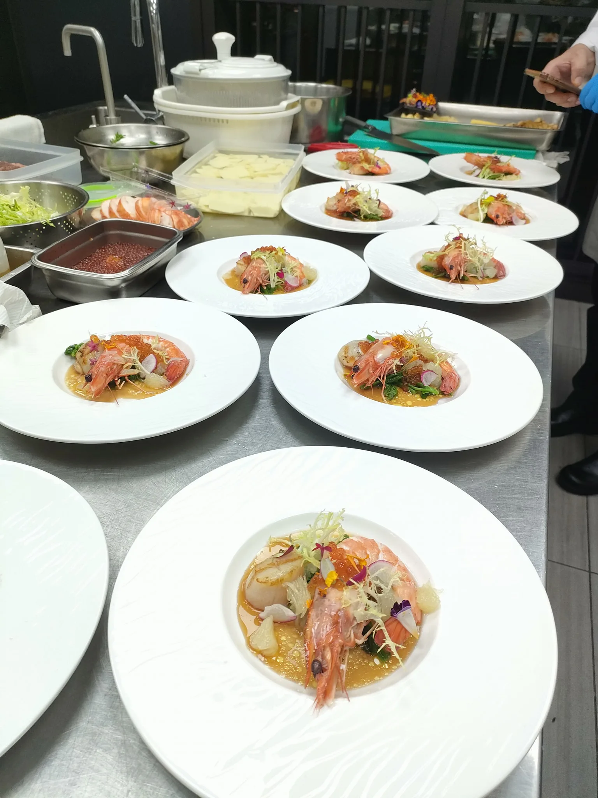

人是先用眼睛吃飯的。料理的顏色會影響第一眼的食慾，也會影響我們對味道的期待，因此色彩是擺盤中不可忽略的一環。
最後更新：2026 年 10 月 11 日
盤中若全是同色系，容易顯得單調；加入一點對比色，例如在奶白色的醬底上放綠色香草、在褐色的肉上搭紅色的點綴，整體就會立刻立體起來。重點是讓一個顏色作為視覺焦點，其他的作為襯托，而不是每個顏色都一樣強。
白色盤最能襯托食材原色，深色或霧面的盤子適合淺色的料理，能讓色彩更集中。盤面適度留白，讓食材有呼吸的空間，比把盤子塞滿更顯精緻。
綠色蔬菜中的葉綠素遇到酸或長時間加熱，會從翠綠轉為偏黃褐的橄欖色，所以快速汆燙後立刻過冰水，是保持翠綠的常用方法。切開的蘋果、酪梨等會氧化變色，需要在最後才處理或用檸檬汁延緩。
春天的嫩綠、夏天的鮮紅與黃、秋天的橘褐、冬天的深色，都能在菜色中呼應季節。這也是使用當季食材的好處之一，顏色與風味往往自然協調，可延伸閱讀為什麼要用當季食材。
一桌菜如果每一道都是醬褐色，視覺上會很快疲乏。舒苑在規劃宴會菜單時，會同時考慮食材、烹調法與色彩的分配，讓整場餐宴在視覺與味覺上都有節奏。
快速汆燙後立即浸入冰水中，並避免與酸性醬汁久放，就能保持較鮮明的綠色。
白色盤最能襯托食材原色；深色或霧面盤適合淺色料理，能讓色彩更集中。
先決定一個主色，再用少量對比色點綴，並留出空白。避免所有元素顏色與份量相近，會讓視覺失去焦點。
提供活動日期、人數與場地，我們將提供最適合的私廚方案與報價建議。